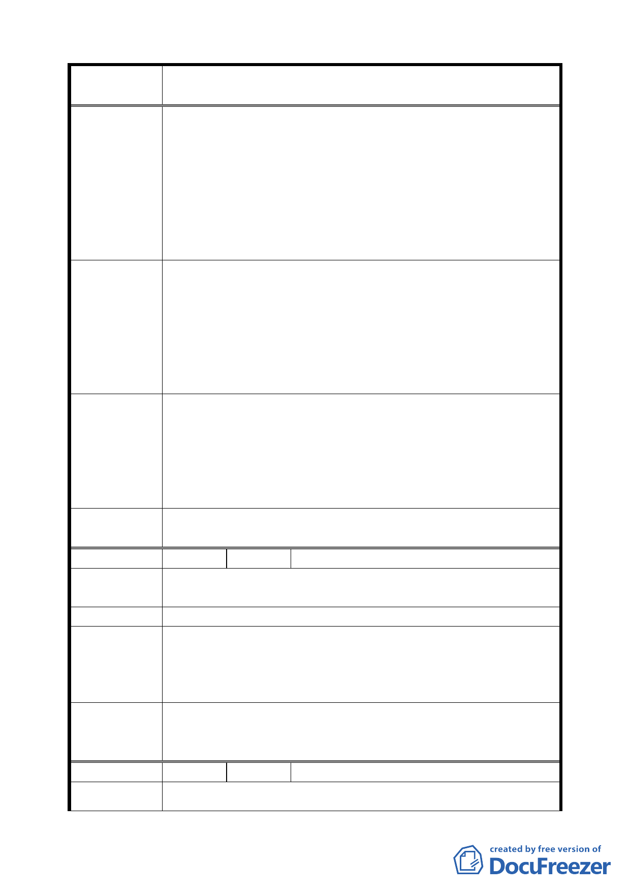

案 名 臺北市文山區都市計畫通盤檢討（主要計畫）案
民生命財產安全，提供市民不可多得的休憩、休閒公共
場所。
二、茲如將原公園預定地變更為保護區，無異全面開放，不
再有公園預定地僅供公園使用之限制，大可任意提供有
關業者自由使用，圖利原欲藉公園預定地營利而無法得
到的業者，可申請任意砍伐樹木、破壞生態保育及水土
保持，置在地居民休憩、休閒權益及生命財產安全於不
顧。
一、本興泰里內之文山區景美 31 號公園、21 號公園及公園
北側計畫道路用地，擬請仍維持原狀，以保障居民合法
權益。
建 議 辦 法 二、辛亥路四段 22 號等隧道用地，現已非隧道用地，擬請予
更正，以維公正原則。
三、在興泰里內之「辛亥捷運站」與「六張犁捷運站」之間
興建捷運環狀網路與捷運淡水線「公館捷運站」連結。
一、景美 31、21 號公園用地，同意發展局之意見變更為保護
專案小組
審查結論
（94.7.7）
區，但對於保護區之使用項目，應於土地使用分區管制
規則中嚴格規定，以避免不當之使用影響生活環境品質。
二、隧道用地設有擋土牆、混凝護坡，同意市府評估意見維
持原隧道用地。
三、捷運系統規劃事宜，則移請市府捷運工程局參考辦理。
委員會議
決議
依專案小組審查結論辦理。
編 號 ７ 陳情人 王春香、趙兆平（09430075400）
陳 情 理 由 請勿將「主興 6」變更為「公園用地」，因維持良好之水土保
（ 主 興 6 ） 持，造成納稅人之損失。
建 議 辦 法 維持目前現況。
專案小組
審查結論
（94.7.7）
因坡度過陡、環境敏感不宜做為住宅使用，且市府已對於本
陳情位置另案辦理「變更臺北市文山區原義芳化工廠北側第
二種住宅區、第三種住宅區及道路用地為公園用地及道路用
地計畫案」，維持原公展方案。
委員會議
決議
本陳情土地市府已於「變更臺北市文山區原義芳化工廠北側
第二種住宅區、第三種住宅區及道路用地為公園用地及道路
用地計畫案」辦理；並刪除本案「主興 6」。
編 號 ８ 陳情人 吳明劍（09430075400）
陳 情 理 由 建議位置：臺北市地形圖幅第 4238 號（介 304100 與 304400、
七